Maturitní otázka 17· Dějiny umění
Dějiny umění – pravěk
Sestavíš obrazovou prezentaci vybraných památek pravěku – každý obrázek s popiskem (název, přibližná datace, místo, technika, sloh, autor) – a uložíš ji do PDF. U obhajoby ji spustíš, nejdřív charakterizuješ období jako celek a pak mluvíš ke každému obrázku: co to je, kdy, proč je to důležité a jaké má kulturní a výtvarné souvislosti. Tahle lekce má 6 epoch, 23 památek s popisky k převzetí a poznávačku.
- EditorInDesign / Illustrator / PowerPoint – 16 : 9
- VýstupPDF prezentace s popisky
- Teoriecharakteristika pravěkých kultur + památky
- ObrázkyWikimedia Commons – volná díla a CC
Praktická část Co se obvykle chce
- Ve zvoleném grafickém editoru jednoduchá obrazová prezentace obrázků dokumentujících vybrané památky pravěku.
- Ke každému obrázku popisek: název, přibližná datace a další související údaje (místo, materiál/technika, sloh, autor).
- Prezentaci uložit do PDF.
Teoretická část Co musíš umět vysvětlit
- Spustit prezentaci a nejdřív charakterizovat pravěkých kultur jako celek (časové vymezení, společnost, funkce umění, materiály, hlavní fáze).
- Pak ke každému obrázku: charakteristika konkrétní památky + kulturní a výtvarně-dějinné souvislosti (co předcházelo, co následovalo, k čemu sloužilo, čím je typické).
Celý přehled všech období s mapou, osou a vyhledáváním: Časová osa dějin umění. Výtvarná teorie (perspektiva, kánon): lekce 16.
Pravěk v kostce
Pravěk je nejdelší kapitola dějin umění – od prvních maleb v jeskyních doby ledové (před 40 000 lety) po keltská oppida na prahu letopočtu. Umění vzniká bez písma, bez měst a bez jmen autorů: víme, co lidé vytvořili, ale proč musíme vykládat z nálezů. Periodizace podle materiálu nástrojů: doba kamenná (paleolit, mezolit, neolit, eneolit), bronzová, železná.
Co říct na úvod obhajoby (2 minuty)
- Paleolit – lovci a sběrači, jeskynní malby zvířat (Chauvet, Lascaux, Altamira), venuše (Věstonická – nejstarší keramika světa), rytiny, loveckou magií a rituálem.
- Mezolit – oteplení po době ledové, drobné nástroje (mikrolity), skalní malby s postavami lovců a lučištníků (Valltorta).
- Neolit – zemědělství (neolitická revoluce), stálé osady, dlouhé domy, keramika (lineární, malovaná), megality (Stonehenge, Newgrange), kult plodnosti.
- Eneolit – měď, šňůrová keramika, Ötzi; doba bronzová – metalurgie, Nebeský disk z Nebry, Sluneční vůz z Trundholmu, mohyly, hradiště.
- Doba železná – halštat a latén, Keltové: hlava z Mšeckých Žehrovic, šperk, oppida (Závist, Stradonice), mince; na konci Germáni a Řím.
Jak sestavit prezentaci s popisky
Stejný postup pro všechny čtyři otázky z dějin umění. Rozhoduje výběr památek, správné popisky a čistý jednotný layout – ne efekty.
Dokument
- InDesign: Nový › Web, 1920 × 1080 px (16 : 9), RGB; vzorová stránka s názvem období v hlavičce, číslem stránky a místem pro popisek; objektový styl pro rámeček obrázku (přizpůsobit proporčně, zarovnat na střed).
- Odstavcové styly: Titulek (Barlow Condensed 56 px), Popisek (24 px), Datace (tučně, barevně), Zdroj (14 px, šedě).
- Alternativa: Illustrator s plátny 1920 × 1080, nebo PowerPoint 16 : 9 – ale ukaž, že umíš layout (mřížka, zarovnání, kontrast).
- Obrázky: Umístit (Ctrl+D) jako vazby, nikdy neroztahovat nepoměrně; u svislých obrazů dva vedle sebe.
Popisek – vzor
Katedrála v Chartres
1194–1220, vrcholná gotika, Francie
kámen, žebrová klenba, 176 vitráží
foto: Wikimedia Commons, CC BY-SA
- Řádek 1: název (česky, případně originál).
- Řádek 2: datace (rok / rozmezí / „kolem“ / století), sloh a fáze, místo nebo sbírka.
- Řádek 3: materiál, technika, rozměry, autor.
- Řádek 4: zdroj a licence obrázku.
- Popisky v této lekci jsou psané přesně v tomto duchu – můžeš je převzít.
Struktura 10–14 slidů
- Titul: období, datace, jméno, třída.
- Časová osa / mapa období s fázemi (jeden slide).
- 8–12 památek: každá vlastní slide s velkým obrázkem a popiskem – architektura, sochařství, malířství, užité umění; postupuj chronologicky.
- Jeden slide „u nás“ (české památky období).
- Zdroje obrázků.
- Export: Soubor › Exportovat › Adobe PDF (interaktivní), stránky, Zobrazit po exportu; zkontroluj velikost (obrázky stačí 150 ppi) a spusť Ctrl+L.
Paleolit
starší doba kamenná – lovci mamutů · cca 40 000 – 10 000 př. n. l.
Nejstarší umění lidstva: jeskynní malby zvířat, drobné venuše a rytiny lovců doby ledové.
Charakteristika
Umění se rodí uprostřed poslední doby ledové. Krátce po Laschampské geomagnetické události (před cca 41 000 lety) se v Evropě usazuje člověk dnešního typu a s ním se objevují první obrazy: malby lvů a nosorožců v jeskyni Chauvet, „lví muž“ vyřezaný z mamutoviny, kostěné flétny. Umění tedy není pozdním luxusem civilizace – vzniká spolu s moderním člověkem.
Malby vznikaly hluboko v jeskyních, mimo obytné prostory, často na těžko přístupných místech. Nebyly určeny k prohlížení, ale k rituálu – loveckou magií, uctíváním zvířecích předků nebo šamanskými obřady. Malíři používali okr, uhel a manganovou čerň, foukali barvu přes ruku (negativní otisky) a využívali vypoukliny skály jako těla zvířat. Zobrazují se téměř výhradně zvířata; člověk je vzácný a schematický.
Drobná plastika – tzv. venuše – zdůrazňuje plodnost: mohutné boky a prsa, potlačený obličej. Věstonická venuše (cca 29 000 let) je nejstarší keramikou světa. Na konci paleolitu (magdalénien) vznikají nejslavnější „galerie“ Lascaux a Altamira s polychromními stády býků, koní a jelenů.
Hlavní znaky
- Zobrazení zvířat (býk, kůň, mamut, jelen) – téměř bez lidí
- Malba na skalní stěny hluboko v jeskyních, okr a uhel
- Drobné plastiky venuší z kamene, kosti a hlíny
- Rytiny na kostech, zdobené zbraně a nástroje
- Magický a rituální účel, nikoli dekorace
Architektura · sochařství · malířství
- Architektura: Přírodní úkryty a jeskyně; na Moravě (Dolní Věstonice, Předmostí) chaty z mamutích kostí a kůží.
- Sochařství: Venuše (Willendorf, Věstonice, Petřkovice), lví muž, zvířecí sošky z mamutoviny a pálené hlíny, reliéfy ve skále.
- Malířství: Jeskynní malby a rytiny: Chauvet, Lascaux, Altamira, Niaux, Rouffignac; v Čechách Mladečské jeskyně bez maleb – malba je u nás vzácná.
Osobnosti a Česko
Jména: Anonymní šamani a malíři, Karel Absolon (objevitel Věstonické venuše), Zdeněk Burian (rekonstrukce pravěku)
U nás: Dolní Věstonice a Pavlov – lovci mamutů, Věstonická venuše a nejstarší keramika; Petřkovická venuše; Předmostí u Přerova.
Souvislosti: Vrchol poslední doby ledové (Würm): extrémní chlad, ledovce nad Skandinávií a Alpami, mamutí step. Nutnost fyzického i psychického úkrytu pod zemí. Umění vzniká krátce po Laschampské geomagnetické události, kdy zesláblo magnetické pole Země.
Památky k prezentaci klikni pro zvětšení · popisky = vzor pro tvoje slidy
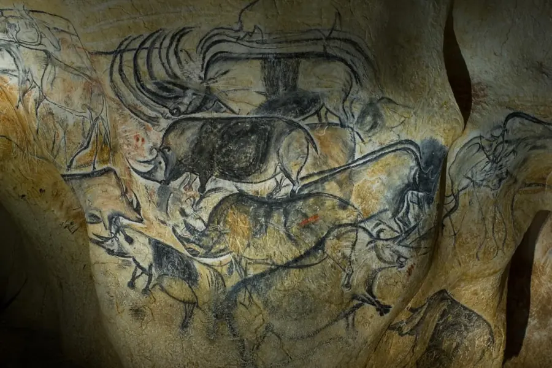
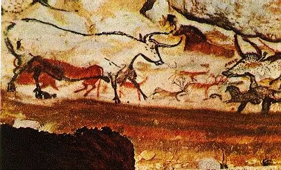
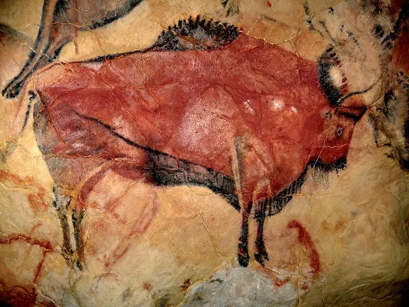
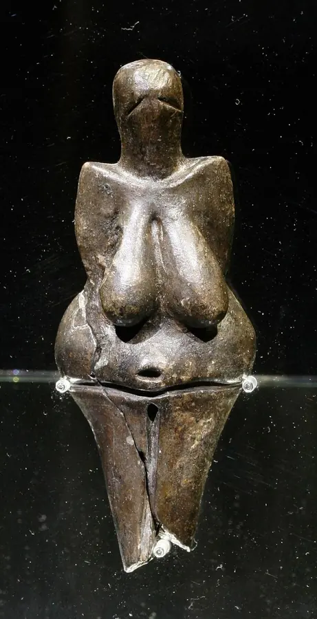
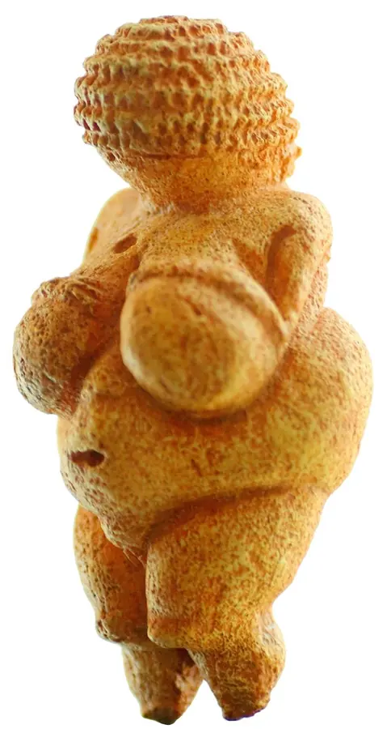
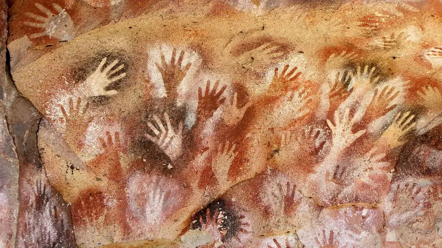
Podrobněji na webu Časová osa dějin umění – Paleolit.
Mezolit
střední doba kamenná · cca 10 000 – 6 000 př. n. l.
Po oteplení mizí mamuti i velké jeskynní galerie; lovci lesa tvoří drobné rytiny, geometrické znaky a skalní malby loveckých scén.
Charakteristika
S koncem doby ledové (cca 11 700 let) se tundra mění v les. Mizí stáda mamutů a sobů a s nimi i důvod pro velké jeskynní svatyně. Menší, pohyblivé skupiny lovců, rybářů a sběračů žijí u řek a jezer.
Umění se zmenšuje a schematizuje: na skalách východního Španělska (Valltorta, Alpera) se poprvé objevují živé scény lovců s luky a tanečníků – člověk vstupuje do obrazu jako hlavní hrdina. Rozvíjí se drobná mikrolitická industrie, rytiny na jantaru a kostech, první geometrické znaky. V Amazonii (Serranía de la Lindosa) vznikají ve stejné době tisíce červených maleb ledovcové fauny.
Hlavní znaky
- Drobné, schematické figury v pohybu
- Lovecké a taneční scény – člověk jako hrdina
- Geometrické znaky, ornament na nástrojích
- Skalní přístřešky místo hlubokých jeskyní
Architektura · sochařství · malířství
- Architektura: Sezónní tábory, chaty z proutí a kůží, první dlouhodobější sídliště u vody.
- Sochařství: Drobné kostěné a jantarové přívěsky, zvířecí figurky.
- Malířství: Levantské skalní umění Španělska; malby v Amazonii; rytiny na oblázcích (azilien).
Osobnosti a Česko
Jména: Anonymní tvůrci
U nás: Mezolitická sídliště v Polabí a v pískovcových převisech Českého ráje (Kokořínsko).
Souvislosti: Prudké oteplení na začátku holocénu, vzestup hladiny moří (zaplavení Doggerlandu mezi Británií a Evropou), rozšíření lesa.
Památky k prezentaci klikni pro zvětšení · popisky = vzor pro tvoje slidy
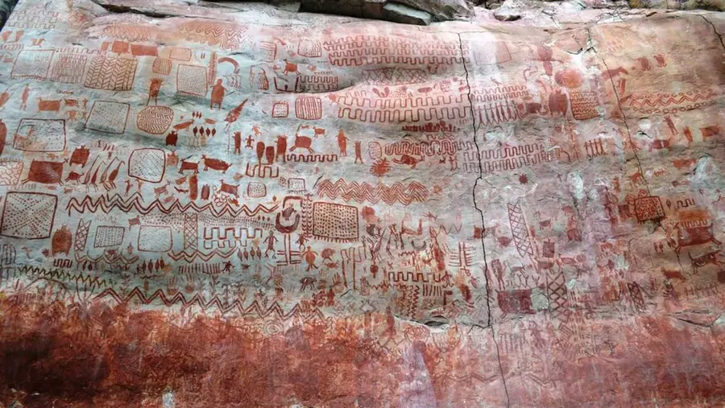
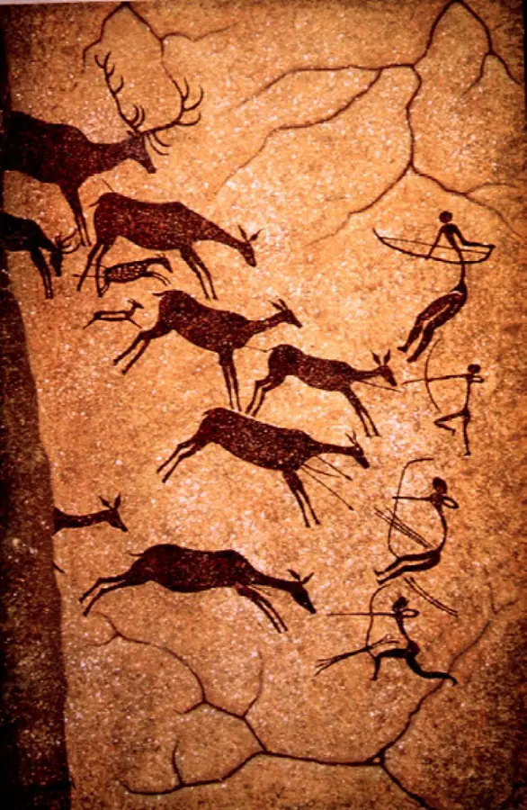
Podrobněji na webu Časová osa dějin umění – Mezolit.
Neolit
mladší doba kamenná – první zemědělci · cca 9 500 – 4 300 př. n. l. (u nás od 5 500)
Neolitická revoluce: zemědělství, trvalé vesnice, keramika s geometrickým ornamentem a první svatyně.
Charakteristika
Zemědělství vzniká na Blízkém východě v „úrodném půlměsíci“ a šíří se do Evropy; do Čech a na Moravu přichází kolem roku 5 500 př. n. l. s kulturou s lineární keramikou. Člověk poprvé přetváří krajinu: kácí les, staví dlouhé kůlové domy a hliněné pece, chová dobytek.
Umění se proměňuje od naturalistického zvířete k abstraktnímu znaku. Na keramice se objevuje rytý a malovaný geometrický ornament (spirály, meandry, vlnice) – podle Worringera výraz „pudu k abstrakci“, potřeby řádu tváří v tvář nevyzpytatelné úrodě a počasí. Vznikají ženské idoly (kult plodnosti a Velké Matky) a domácí kultovní předměty.
Překvapením posledních desetiletí je Göbekli Tepe v Turecku: monumentální kruhové svatyně s pilíři ve tvaru T a reliéfy zvířat, postavené kolem 9 500 př. n. l. ještě lovci-sběrači. Chrám tedy možná předcházel vesnici. Çatalhöyük (7 500–5 700 př. n. l.) je první „město“ s nástěnnými malbami a sochami.
Hlavní znaky
- Geometrický ornament na keramice (lineární, vypíchaná, moravská malovaná)
- Trvalé domy a vesnice, dlouhé domy
- Ženské idoly – kult plodnosti
- První monumentální svatyně (Göbekli Tepe)
- Broušené kamenné nástroje
Architektura · sochařství · malířství
- Architektura: Dlouhé kůlové domy (u nás Bylany u Kutné Hory), hliněné domy Çatalhöyüku, svatyně Göbekli Tepe, rondely – kruhové příkopové areály na Moravě.
- Sochařství: Hliněné venuše a idoly, zoomorfní nádoby, reliéfy na pilířích Göbekli Tepe.
- Malířství: Malovaná keramika (moravská malovaná keramika, Cucuteni-Trypillia), nástěnné malby v Çatalhöyüku.
Osobnosti a Česko
Jména: Anonymní zemědělské komunity, Klaus Schmidt (výzkum Göbekli Tepe)
U nás: Bylany u Kutné Hory (dlouhé domy), Vedrovice, moravská malovaná keramika, rondel v Kolíně – jedny z nejstarších monumentálních staveb Evropy.
Souvislosti: Holocénní oteplení, ústup ledovců; zemědělství vzniká po mladším dryasu. Ochlazení 8,2 tisíce let (6 200 př. n. l.) vyhání zemědělce z Anatolie do Evropy.
Památky k prezentaci klikni pro zvětšení · popisky = vzor pro tvoje slidy
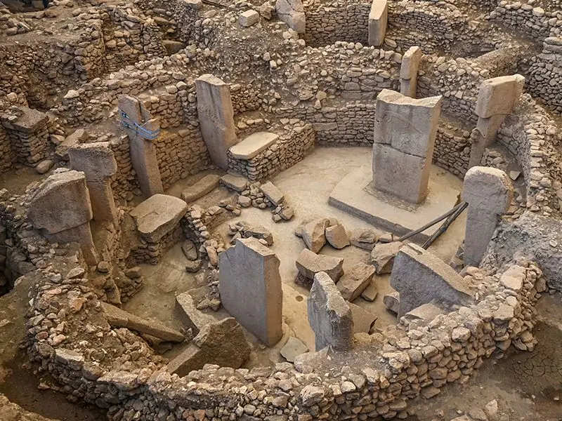
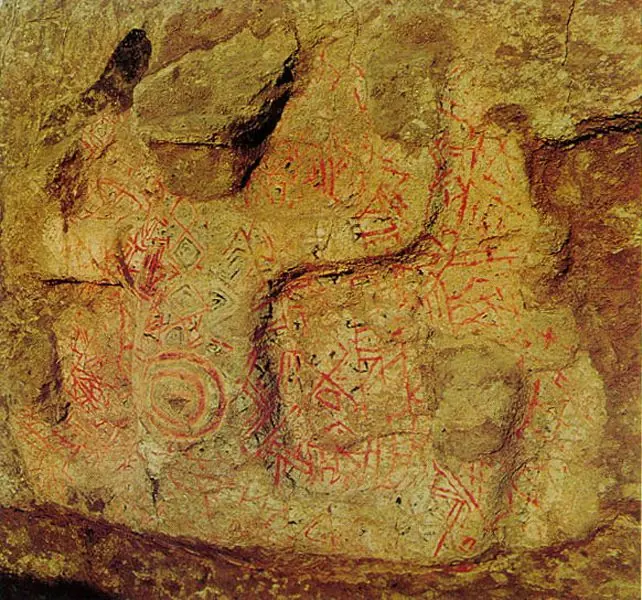
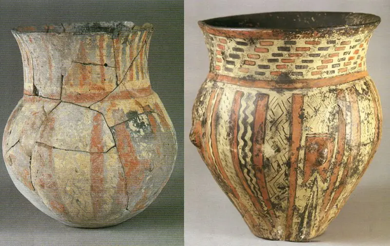
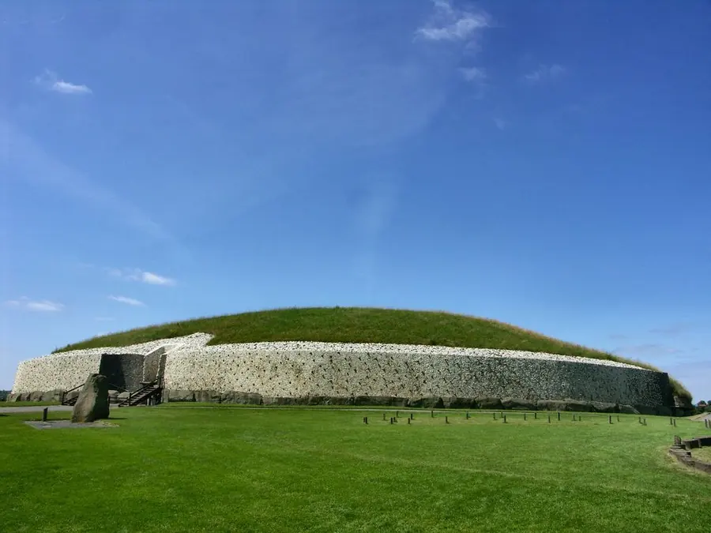
Podrobněji na webu Časová osa dějin umění – Neolit.
Eneolit
pozdní doba kamenná – doba měděná · cca 4 300 – 2 200 př. n. l.
Doba prvních kovů, oradla, kola a megalitů – Stonehenge, Carnac, muž z ledovce Ötzi.
Charakteristika
Měď se začíná tavit a odlévat, objevuje se kolo, vůz a oradlo tažené dobytkem. Společnost se rozvrstvuje – bohaté hroby náčelníků, opevněná výšinná sídliště. V západní Evropě vrcholí megalitická architektura: menhiry, dolmeny, kromlechy (Stonehenge, Carnac), orientované podle Slunce a Měsíce.
Ötzi, muž z alpského ledovce (cca 3 300 př. n. l.), nese měděnou sekeru, luk, tetování a oděv z kůží – ukazuje, jak vypadal každodenní život té doby. Na východě zatím vznikají první města v Mezopotámii a písmo; pravěk Evropy a starověk Blízkého východu běží souběžně.
V českých zemích jde o kultury nálevkovitých pohárů, řivnáčskou, šňůrovou a zvoncovitých pohárů. Keramika je zdobena šňůrovými otisky, objevují se první měděné šperky a dýky.
Hlavní znaky
- Měď a zlato – první kovy
- Megality: menhir, dolmen, kromlech
- Astronomická orientace staveb
- Kolo, vůz, oradlo; bohaté hroby elit
- Šňůrová keramika, zvoncovité poháry
Architektura · sochařství · malířství
- Architektura: Stonehenge (3 000–2 000 př. n. l.), Carnac, Newgrange; kolové stavby na jezerech v Alpách; výšinná hradiště.
- Sochařství: Menhiry-stély se schematickými postavami, měděné a zlaté šperky, idoly.
- Malířství: Rytá a šňůrová výzdoba keramiky, skalní rytiny v Alpách (Val Camonica).
Osobnosti a Česko
Jména: Ötzi – muž z ledovce, Stavitelé Stonehenge
U nás: Menhiry v Klobukách a Drahomyšli, hradiště Homolka u Stehelčevsi, řivnáčská kultura, hrob lukostřelce (zvoncovité poháry).
Souvislosti: Teplé a vlhké „atlantické“ období vrcholí a přechází v sušší subboreál; vysychání Sahary (3 900 př. n. l.) žene obyvatelstvo k Nilu. Na konci období megasucho 4,2 tisíce let.
Památky k prezentaci klikni pro zvětšení · popisky = vzor pro tvoje slidy
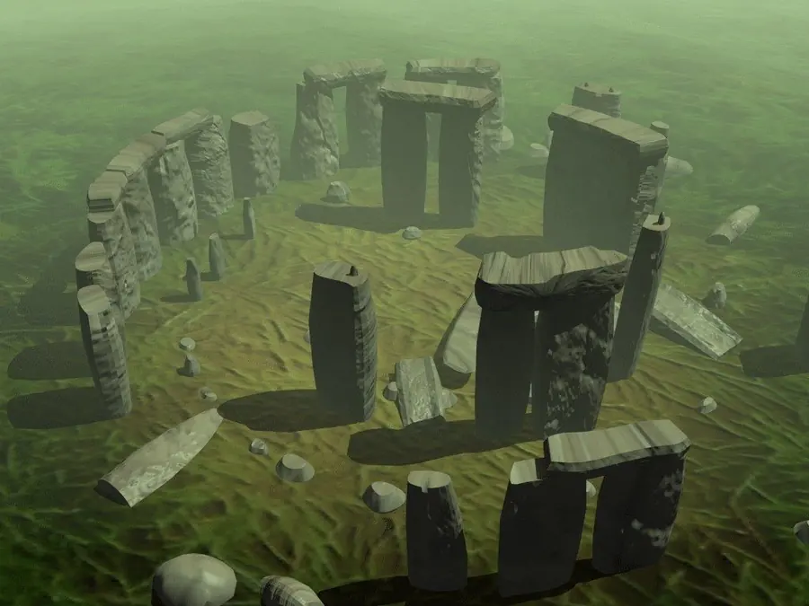
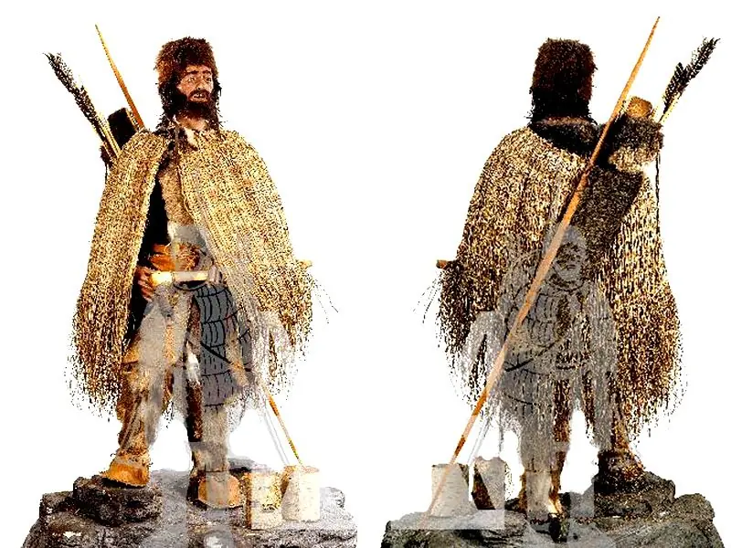
Podrobněji na webu Časová osa dějin umění – Eneolit.
Doba bronzová
únětická, mohylová, popelnicová pole · cca 2 200 – 800 př. n. l.
Bronz (měď + cín) přináší nové zbraně, šperky a dálkový obchod; umění je abstraktní, sluneční a ornamentální.
Charakteristika
Slitina mědi a cínu vyžaduje obchod na velké vzdálenosti (cín z Cornwallu a Krušných hor, jantar z Baltu) – Evropa se propojuje. Vznikají bohaté náčelnické hroby (mohyly), hradiště a depoty bronzových předmětů obětované bohům do vody a bažin.
Umění doby bronzové je převážně užité a abstraktní: spirály, soustředné kruhy, sluneční kotouče. Sluneční vůz z Trundholmu (Dánsko) a disk z Nebry (nejstarší zobrazení oblohy, cca 1 600 př. n. l.) ukazují kult Slunce a znalost astronomie. Figurální umění je vzácné – skalní rytiny lodí a bojovníků ve Skandinávii.
Ve Středomoří téže doby vrcholí mínojská a mykénská kultura a v Egyptě Nová říše; ve střední Evropě mluvíme o únětické kultuře (pojmenované podle Únětic u Prahy), mohylových kulturách a kulturách popelnicových polí (žárové pohřbívání).
Hlavní znaky
- Bronzové zbraně, šperky a nádoby, tepání a odlévání
- Sluneční symbolika, spirály, kruhy
- Depoty (obětiny) v bažinách a řekách
- Mohyly a hradiště; později žárové hroby v popelnicích
- Dálkový obchod: cín, jantar, sůl
Architektura · sochařství · malířství
- Architektura: Opevněná hradiště, mohylová pohřebiště, kolové osady.
- Sochařství: Bronzové figurky, sluneční vůz z Trundholmu, kultovní nádobky a vozíky.
- Malířství: Rytý ornament na bronzu a keramice, skalní rytiny (Tanum, Val Camonica).
Osobnosti a Česko
Jména: Únětická kultura, Lužická kultura, Knovízská kultura
U nás: Únětice u Prahy – eponymní naleziště; depoty bronzů; kultovní nádobka z Kolínska; hradiště Plešivec.
Souvislosti: Období začíná megasuchem 4,2 tisíce let a končí kolapsem doby bronzové (sucho, nájezdy, zánik obchodu s cínem kolem 1 200 př. n. l.).
Památky k prezentaci klikni pro zvětšení · popisky = vzor pro tvoje slidy
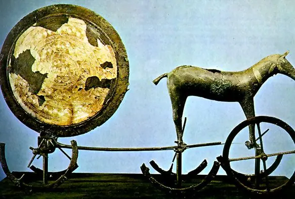
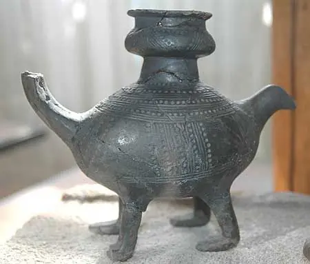
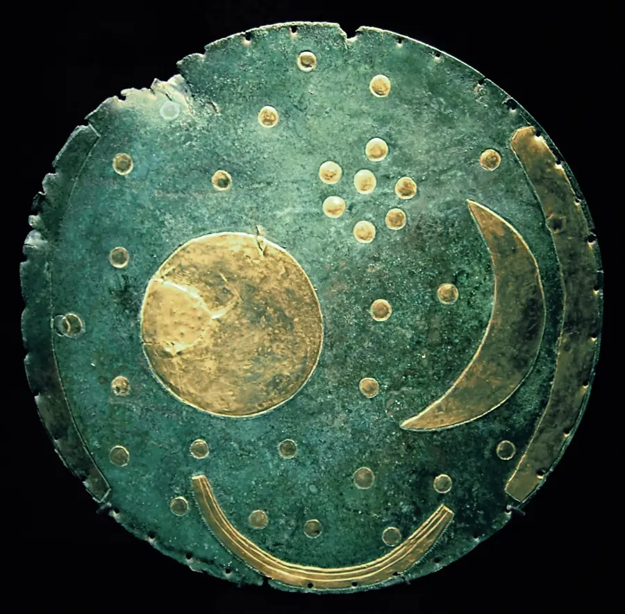
Podrobněji na webu Časová osa dějin umění – Doba bronzová.
Doba železná
halštat a latén – Keltové · cca 800 př. n. l. – přelom letopočtu
Železo, keltská oppida, mince a dynamický spirálový ornament laténského umění.
Charakteristika
Železo je dostupnější než bronz – zbraně a nástroje se rozšiřují mezi všechny vrstvy. Starší doba železná (halštat, 800–450 př. n. l.) je dobou knížecích mohyl s vozy a orientálními importy (Hochdorf, Vix). Mladší doba železná (latén, 450 př. n. l. – 0) patří Keltům, prvnímu etniku u nás známému jménem (Bójové).
Keltské umění je abstraktní, dynamické a ornamentální: propletené spirály, trojlisty (triskely), stylizované masky a zvířata na sponách, náramcích a mečích. Keltové razí zlaté mince (duhovky), zakládají oppida – první městské útvary – a ovládají sklářství a hrnčířský kruh.
Zatímco střední Evropa žije v „pravěku“, ve Středomoří vrcholí řecká klasika a rozmach Říma. Kolem přelomu letopočtu Kelty vytlačují Germáni a do Podunají přichází Řím – pro naše území začíná doba římská.
Hlavní znaky
- Železné zbraně a nástroje
- Keltský ornament: spirála, triskel, maska
- Oppida (Závist, Stradonice, Staré Hradisko)
- Mince, sklo, hrnčířský kruh
- Knížecí mohyly halštatu s vozy
Architektura · sochařství · malířství
- Architektura: Oppida s hradbami (murus gallicus), dvorce, čtyřúhelníkové valy (viereckschanze).
- Sochařství: Kamenná hlava z Mšeckých Žehrovic, keltské stély, bronzové figurky, zdobené spony.
- Malířství: Malovaná keramika, email a korál na kovu, mince s abstraktní stylizací.
Osobnosti a Česko
Jména: Keltové (Bójové), Bylanská kultura, Germáni (Markomani)
U nás: Hlava Kelta z Mšeckých Žehrovic, oppidum Závist u Prahy, Stradonice, duhovky; komorové hroby bylanské kultury (Plaňany).
Souvislosti: Kolem 800 př. n. l. vlhké a chladné období (tzv. „Homérovo minimum“ sluneční aktivity) – expanze Keltů; od 250 př. n. l. římské klimatické optimum.
Památky k prezentaci klikni pro zvětšení · popisky = vzor pro tvoje slidy
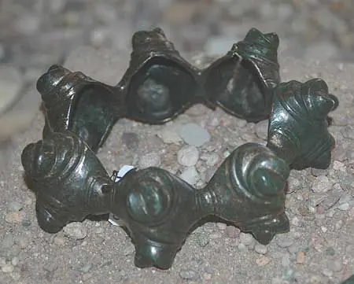
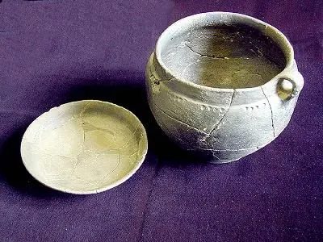
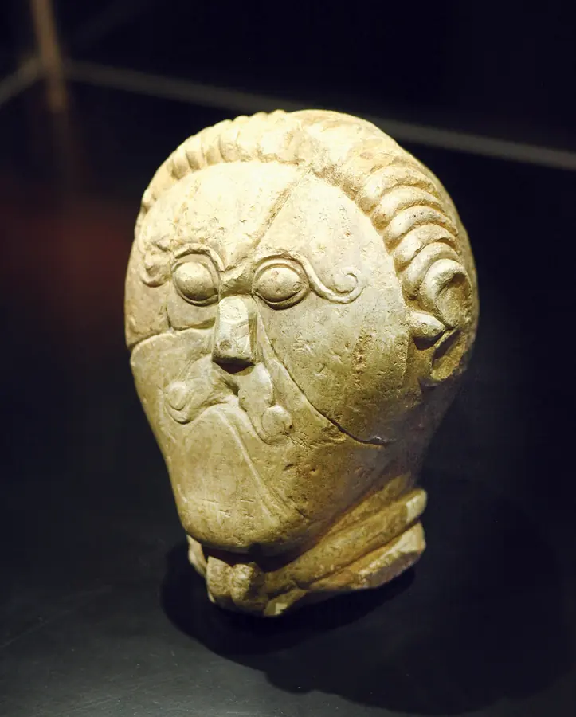
Podrobněji na webu Časová osa dějin umění – Doba železná.
Mimo Evropu ve stejné době
Komise ocení jednu až dvě ukázky, že svět nebyla jen Evropa – a datace, která to zařadí vedle evropských epoch.
Nejstarší umění světa cca 75 000 – 10 000 let
Afrika, Indonésie, Amerika
Symbolické myšlení začíná v Africe (Blombos, 75 000 let); nejstarší figurální malby jsou dnes na Sulawesi (45 000 let).
- Rytý okr, korálky, otisky rukou
- Zvířata a lovecké scény
- Skalní přístřešky na všech kontinentech
- Symbolika starší než evropské jeskyně
Jména:
U nás: —
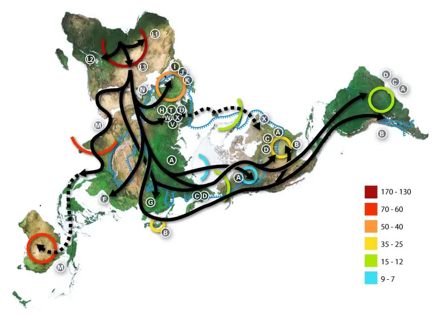
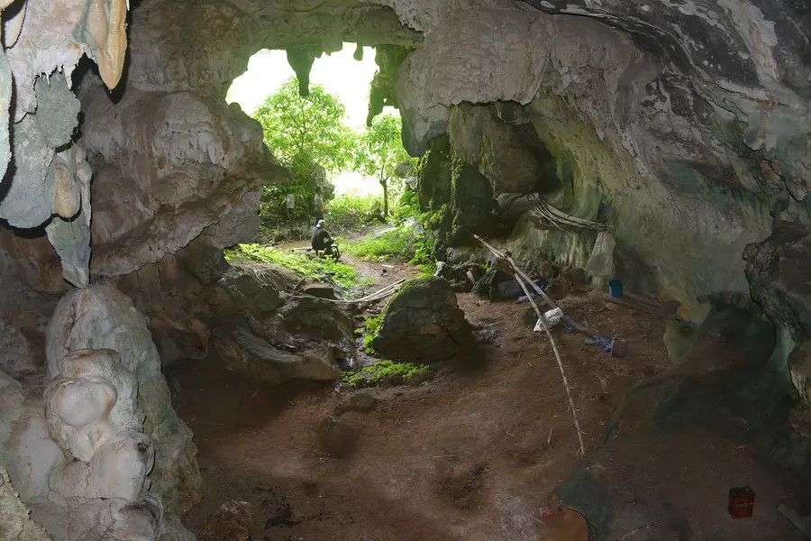
Umění původních Australanů cca 40 000 let – dodnes
nejdelší nepřetržitá tradice
Skalní malby v Kakadu a Kimberley, rentgenový styl a tečkovaná malba Snění – tradice trvající desítky tisíc let až do současných galerií.
- Rentgenový styl
- Tečkovaná malba, mapy Snění
- Okr, bílá hlinka, kůra
- Umění jako obřad a vlastnictví příběhu
Jména: Emily Kame Kngwarreye, Albert Namatjira, Clifford Possum
U nás: —
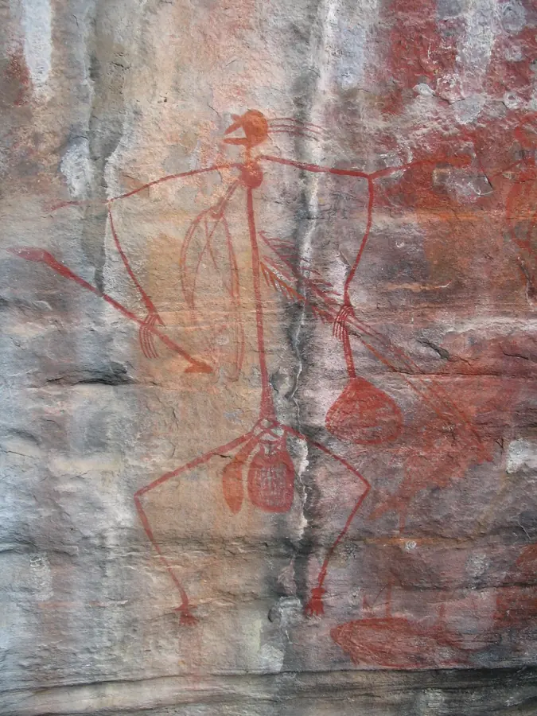
Postup pro 30 minut
Většinu času sežere hledání obrázků a psaní popisků – proto měj v hlavě 8–10 památek, které umíš, a jejich datace.
- 0–3minVýběr
Projdi připravené obrázky, vyber 8–12 památek napříč fázemi období a druhy umění. Seřaď chronologicky.
- 3–8minŠablona
InDesign 1920 × 1080, vzorová stránka (hlavička, číslo), styly Titulek/Popisek/Datace/Zdroj, objektový styl rámečku. Titulní slide.
- 8–11minOsa období
Slide s fázemi a daty (obdélníky + text) – ukáže, že období chápeš v čase.
- 11–24minPamátky
Na každý slide: umístit obrázek, přizpůsobit rámečku, popisek 3–4 řádky podle vzoru. Cca 1 minuta na slide – popisky piš stručně, mluvit budeš u obhajoby.
- 24–27minU nás + zdroje
Slide s českými památkami období; poslední slide zdroje obrázků (soubor, autor, licence).
- 27–30minKontrola a export
Pravopis (Ctrl+I), datace a názvy, žádný roztažený obrázek, jednotné velikosti písma. Export interaktivní PDF, otevřít, Ctrl+L, projít.
Co říct komisi na začátek
„Prezentaci jsem sestavil v InDesignu jako PDF 16 : 9 s jednotnou šablonou a popisky název – datace – místo – technika – zdroj. Období pravěku charakterizuji takto: …“ (viz Přehled období výše – 5 vět). „Památky jsem vybral tak, aby pokryly fáze období a architekturu, sochařství i malířství, včetně českých příkladů.“
Časté chyby
Na co se komise ptá
Charakterizuj pravěkých kultur jako celek.
Pravěk je nejdelší kapitola dějin umění – od prvních maleb v jeskyních doby ledové (před 40 000 lety) po keltská oppida na prahu letopočtu. Umění vzniká bez písma, bez měst a bez jmen autorů: víme, co lidé vytvořili, ale proč musíme vykládat z nálezů. Periodizace podle materiálu nástrojů: doba kamenná (paleolit, mezolit, neolit, eneolit), bronzová, železná.Jaké jsou hlavní znaky období Paleolit?
cca 40 000 – 10 000 př. n. l.. Nejstarší umění lidstva: jeskynní malby zvířat, drobné venuše a rytiny lovců doby ledové. Znaky: Zobrazení zvířat (býk, kůň, mamut, jelen) – téměř bez lidí; Malba na skalní stěny hluboko v jeskyních, okr a uhel; Drobné plastiky venuší z kamene, kosti a hlíny; Rytiny na kostech, zdobené zbraně a nástroje; Magický a rituální účel, nikoli dekorace. Jména: Anonymní šamani a malíři, Karel Absolon (objevitel Věstonické venuše), Zdeněk Burian (rekonstrukce pravěku). U nás: Dolní Věstonice a Pavlov – lovci mamutů, Věstonická venuše a nejstarší keramika; Petřkovická venuše; Předmostí u Přerova.Jaké jsou hlavní znaky období Mezolit?
cca 10 000 – 6 000 př. n. l.. Po oteplení mizí mamuti i velké jeskynní galerie; lovci lesa tvoří drobné rytiny, geometrické znaky a skalní malby loveckých scén. Znaky: Drobné, schematické figury v pohybu; Lovecké a taneční scény – člověk jako hrdina; Geometrické znaky, ornament na nástrojích; Skalní přístřešky místo hlubokých jeskyní. Jména: Anonymní tvůrci. U nás: Mezolitická sídliště v Polabí a v pískovcových převisech Českého ráje (Kokořínsko).Jaké jsou hlavní znaky období Neolit?
cca 9 500 – 4 300 př. n. l. (u nás od 5 500). Neolitická revoluce: zemědělství, trvalé vesnice, keramika s geometrickým ornamentem a první svatyně. Znaky: Geometrický ornament na keramice (lineární, vypíchaná, moravská malovaná); Trvalé domy a vesnice, dlouhé domy; Ženské idoly – kult plodnosti; První monumentální svatyně (Göbekli Tepe); Broušené kamenné nástroje. Jména: Anonymní zemědělské komunity, Klaus Schmidt (výzkum Göbekli Tepe). U nás: Bylany u Kutné Hory (dlouhé domy), Vedrovice, moravská malovaná keramika, rondel v Kolíně – jedny z nejstarších monumentálních staveb Evropy.Jaké jsou hlavní znaky období Eneolit?
cca 4 300 – 2 200 př. n. l.. Doba prvních kovů, oradla, kola a megalitů – Stonehenge, Carnac, muž z ledovce Ötzi. Znaky: Měď a zlato – první kovy; Megality: menhir, dolmen, kromlech; Astronomická orientace staveb; Kolo, vůz, oradlo; bohaté hroby elit; Šňůrová keramika, zvoncovité poháry. Jména: Ötzi – muž z ledovce, Stavitelé Stonehenge. U nás: Menhiry v Klobukách a Drahomyšli, hradiště Homolka u Stehelčevsi, řivnáčská kultura, hrob lukostřelce (zvoncovité poháry).Jaké jsou hlavní znaky období Doba bronzová?
cca 2 200 – 800 př. n. l.. Bronz (měď + cín) přináší nové zbraně, šperky a dálkový obchod; umění je abstraktní, sluneční a ornamentální. Znaky: Bronzové zbraně, šperky a nádoby, tepání a odlévání; Sluneční symbolika, spirály, kruhy; Depoty (obětiny) v bažinách a řekách; Mohyly a hradiště; později žárové hroby v popelnicích; Dálkový obchod: cín, jantar, sůl. Jména: Únětická kultura, Lužická kultura, Knovízská kultura. U nás: Únětice u Prahy – eponymní naleziště; depoty bronzů; kultovní nádobka z Kolínska; hradiště Plešivec.Jaké jsou hlavní znaky období Doba železná?
cca 800 př. n. l. – přelom letopočtu. Železo, keltská oppida, mince a dynamický spirálový ornament laténského umění. Znaky: Železné zbraně a nástroje; Keltský ornament: spirála, triskel, maska; Oppida (Závist, Stradonice, Staré Hradisko); Mince, sklo, hrnčířský kruh; Knížecí mohyly halštatu s vozy. Jména: Keltové (Bójové), Bylanská kultura, Germáni (Markomani). U nás: Hlava Kelta z Mšeckých Žehrovic, oppidum Závist u Prahy, Stradonice, duhovky; komorové hroby bylanské kultury (Plaňany).Proč jsi vybral právě tyto památky a co o každé řekneš?
Ke každému obrázku: název, datace, místo/sbírka, materiál a technika, sloh/fáze, autor (pokud je znám) a jednu souvislost – k čemu dílo sloužilo, co bylo nového, co z něj převzaly další epochy. Vybírej tak, aby každá fáze období měla aspoň jednu architekturu, jednu sochu/plastiku a jednu malbu či užité umění.Odkud jsou obrázky a smíš je použít?
Z Wikimedia Commons – volná díla (autor zemřel před více než 70 lety) nebo fotografie pod licencí CC BY / CC BY-SA, u kterých uvádím autora fotografie a licenci v popisku nebo na posledním slidu „Zdroje“. Pro školní prezentaci platí i citační výjimka, ale zdroj uvádím vždy.V jakém programu jsi prezentaci dělal a proč PDF?
InDesign (vzorové stránky, styly, obrázky umístěné jako vazby, export do interaktivního PDF 16 : 9) nebo Illustrator/PowerPoint. PDF se otevře všude stejně, drží písma i obrázky, spustí se na celou obrazovku (Ctrl+L) a listuje se šipkami.